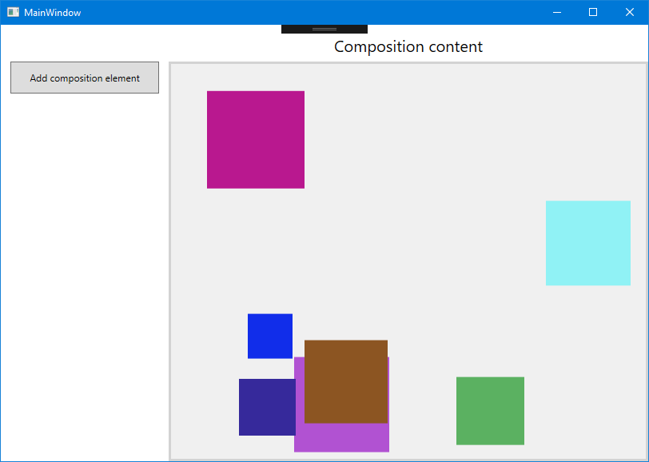

Using the Visual Layer with WPF
You can use Windows Runtime Composition APIs (also called the Visual layer) in your Windows Presentation Foundation (WPF) apps to create modern experiences that light up for Windows users.
The complete code for this tutorial is available on GitHub: WPF HelloComposition sample.
Prerequisites
The UWP XAML hosting API has these prerequisites.
- We assume that you have some familiarity with app development using WPF and UWP. For more info, see:
- .NET Framework 4.7.2 or later
- Windows 10 version 1803 or later
- Windows 10 SDK 17134 or later
How to use Composition APIs in WPF
In this tutorial, you create a simple WPF app UI and add animated Composition elements to it. Both the WPF and Composition components are kept simple, but the interop code shown is the same regardless of the complexity of the components. The finished app looks like this.

Create a WPF project
The first step is to create the WPF app project, which includes an application definition and the XAML page for the UI.
To create a new WPF Application project in Visual C# named HelloComposition:
Open Visual Studio and select File > New > Project.
The New Project dialog opens.
Under the Installed category, expand the Visual C# node, and then select Windows Desktop.
Select the WPF App (.NET Framework) template.
Enter the name HelloComposition, select Framework .NET Framework 4.7.2, then click OK.
Visual Studio creates the project and opens the designer for the default application window named MainWindow.xaml.
Configure the project to use Windows Runtime APIs
To use Windows Runtime (WinRT) APIs in your WPF app, you need to configure your Visual Studio project to access the Windows Runtime. In addition, vectors are used extensively by the Composition APIs, so you need to add the references required to use vectors.
NuGet packages are available to address both of these needs. Install the latest versions of these packages to add the necessary references to your project.
- Microsoft.Windows.SDK.Contracts (Requires default package management format set to PackageReference.)
- System.Numerics.Vectors
Note
While we recommend using the NuGet packages to configure your project, you can add the required references manually. For more info, see Enhance your desktop application for Windows. The following table shows the files that you need to add references to.
| File | Location |
|---|---|
| System.Runtime.WindowsRuntime | C:\Windows\Microsoft.NET\Framework\v4.0.30319 |
| Windows.Foundation.UniversalApiContract.winmd | C:\Program Files (x86)\Windows Kits\10\References<sdk version>\Windows.Foundation.UniversalApiContract<version> |
| Windows.Foundation.FoundationContract.winmd | C:\Program Files (x86)\Windows Kits\10\References<sdk version>\Windows.Foundation.FoundationContract<version> |
| System.Numerics.Vectors.dll | C:\WINDOWS\Microsoft.Net\assembly\GAC_MSIL\System.Numerics.Vectors\v4.0_4.0.0.0__b03f5f7f11d50a3a |
| System.Numerics.dll | C:\Program Files (x86)\Reference Assemblies\Microsoft\Framework.NETFramework\v4.7.2 |
Configure the project to be per-monitor DPI aware
The visual layer content you add to your app does not automatically scale to match the DPI settings of the screen it's shown on. You need to enable per-monitor DPI awareness for your app, and then make sure that the code you use to create your visual layer content takes into account the current DPI scale when the app runs. Here, we configure the project to be DPI aware. In later sections, we show how to use the DPI information to scale the visual layer content.
WPF apps are System DPI aware by default, but need to declare themselves to be per-monitor DPI aware in an app.manifest file. To turn on Windows-level per-monitor DPI awareness in the app manifest file:
In Solution Explorer, right click the HelloComposition project.
In the context menu, select Add > New Item....
In the Add New Item dialog, select 'Application Manifest File', then click Add. (You can leave the default name.)
In the app.manifest file, find this xml and un-comment it:
<application xmlns="urn:schemas-microsoft-com:asm.v3"> <windowsSettings> <dpiAware xmlns="http://schemas.microsoft.com/SMI/2005/WindowsSettings">true</dpiAware> </windowsSettings> </application>Add this setting after the opening
<windowsSettings>tag:<dpiAwareness xmlns="http://schemas.microsoft.com/SMI/2016/WindowsSettings">PerMonitor</dpiAwareness>You also need to set the DoNotScaleForDpiChanges setting in the App.config file.
Open App.Config and add this xml inside the
<configuration>element:<runtime> <AppContextSwitchOverrides value="Switch.System.Windows.DoNotScaleForDpiChanges=false"/> </runtime>
Note
AppContextSwitchOverrides can only be set once. If your application already has one set, you must semicolon delimit this switch inside the value attribute.
(For more info, see the Per Monitor DPI Developer Guide and samples on GitHub.)
Create an HwndHost derived class to host composition elements
To host content you create with the visual layer, you need to create a class that derives from HwndHost. This is where you do most of the configuration for hosting Composition APIs. In this class, you use Platform Invocation Services (PInvoke) and COM Interop to bring Composition APIs into your WPF app. For more info about PInvoke and COM Interop, see Interoperating with unmanaged code.
Tip
If you need to, check the complete code at the end of the tutorial to make sure all the code is in the right places as you work through the tutorial.
Add a new class file to your project that derives from HwndHost.
- In Solution Explorer, right click the HelloComposition project.
- In the context menu, select Add > Class....
- In the Add New Item dialog, name the class CompositionHost.cs, then click Add.
In CompositionHost.cs, edit the class definition to derive from HwndHost.
// Add // using System.Windows.Interop; namespace HelloComposition { class CompositionHost : HwndHost { } }Add the following code and constructor to the class.
// Add // using Windows.UI.Composition; IntPtr hwndHost; int hostHeight, hostWidth; object dispatcherQueue; ICompositionTarget compositionTarget; public Compositor Compositor { get; private set; } public Visual Child { set { if (Compositor == null) { InitComposition(hwndHost); } compositionTarget.Root = value; } } internal const int WS_CHILD = 0x40000000, WS_VISIBLE = 0x10000000, LBS_NOTIFY = 0x00000001, HOST_ID = 0x00000002, LISTBOX_ID = 0x00000001, WS_VSCROLL = 0x00200000, WS_BORDER = 0x00800000; public CompositionHost(double height, double width) { hostHeight = (int)height; hostWidth = (int)width; }Override the BuildWindowCore and DestroyWindowCore methods.
Note
In BuildWindowCore, you call the InitializeCoreDispatcher and InitComposition methods. You create these methods in the next steps.
// Add // using System.Runtime.InteropServices; protected override HandleRef BuildWindowCore(HandleRef hwndParent) { // Create Window hwndHost = IntPtr.Zero; hwndHost = CreateWindowEx(0, "static", "", WS_CHILD | WS_VISIBLE, 0, 0, hostWidth, hostHeight, hwndParent.Handle, (IntPtr)HOST_ID, IntPtr.Zero, 0); // Create Dispatcher Queue dispatcherQueue = InitializeCoreDispatcher(); // Build Composition tree of content InitComposition(hwndHost); return new HandleRef(this, hwndHost); } protected override void DestroyWindowCore(HandleRef hwnd) { if (compositionTarget.Root != null) { compositionTarget.Root.Dispose(); } DestroyWindow(hwnd.Handle); }- CreateWindowEx and DestroyWindow require a PInvoke declaration. Place this declaration at the end of the code for the class.
#region PInvoke declarations [DllImport("user32.dll", EntryPoint = "CreateWindowEx", CharSet = CharSet.Unicode)] internal static extern IntPtr CreateWindowEx(int dwExStyle, string lpszClassName, string lpszWindowName, int style, int x, int y, int width, int height, IntPtr hwndParent, IntPtr hMenu, IntPtr hInst, [MarshalAs(UnmanagedType.AsAny)] object pvParam); [DllImport("user32.dll", EntryPoint = "DestroyWindow", CharSet = CharSet.Unicode)] internal static extern bool DestroyWindow(IntPtr hwnd); #endregion PInvoke declarationsInitialize a thread with a CoreDispatcher. The core dispatcher is responsible for processing window messages and dispatching events for WinRT APIs. New instances of CoreDispatcher must be created on a thread that has a CoreDispatcher.
- Create a method named InitializeCoreDispatcher and add code to set up the dispatcher queue.
private object InitializeCoreDispatcher() { DispatcherQueueOptions options = new DispatcherQueueOptions(); options.apartmentType = DISPATCHERQUEUE_THREAD_APARTMENTTYPE.DQTAT_COM_STA; options.threadType = DISPATCHERQUEUE_THREAD_TYPE.DQTYPE_THREAD_CURRENT; options.dwSize = Marshal.SizeOf(typeof(DispatcherQueueOptions)); object queue = null; CreateDispatcherQueueController(options, out queue); return queue; }- The dispatcher queue also requires a PInvoke declaration. Place this declaration inside the PInvoke declarations region you created in the previous step.
//typedef enum DISPATCHERQUEUE_THREAD_APARTMENTTYPE //{ // DQTAT_COM_NONE, // DQTAT_COM_ASTA, // DQTAT_COM_STA //}; internal enum DISPATCHERQUEUE_THREAD_APARTMENTTYPE { DQTAT_COM_NONE = 0, DQTAT_COM_ASTA = 1, DQTAT_COM_STA = 2 }; //typedef enum DISPATCHERQUEUE_THREAD_TYPE //{ // DQTYPE_THREAD_DEDICATED, // DQTYPE_THREAD_CURRENT //}; internal enum DISPATCHERQUEUE_THREAD_TYPE { DQTYPE_THREAD_DEDICATED = 1, DQTYPE_THREAD_CURRENT = 2, }; //struct DispatcherQueueOptions //{ // DWORD dwSize; // DISPATCHERQUEUE_THREAD_TYPE threadType; // DISPATCHERQUEUE_THREAD_APARTMENTTYPE apartmentType; //}; [StructLayout(LayoutKind.Sequential)] internal struct DispatcherQueueOptions { public int dwSize; [MarshalAs(UnmanagedType.I4)] public DISPATCHERQUEUE_THREAD_TYPE threadType; [MarshalAs(UnmanagedType.I4)] public DISPATCHERQUEUE_THREAD_APARTMENTTYPE apartmentType; }; //HRESULT CreateDispatcherQueueController( // DispatcherQueueOptions options, // ABI::Windows::System::IDispatcherQueueController** dispatcherQueueController //); [DllImport("coremessaging.dll", EntryPoint = "CreateDispatcherQueueController", CharSet = CharSet.Unicode)] internal static extern IntPtr CreateDispatcherQueueController(DispatcherQueueOptions options, [MarshalAs(UnmanagedType.IUnknown)] out object dispatcherQueueController);You now have the dispatcher queue ready and can begin to initialize and create Composition content.
Initialize the Compositor. The Compositor is a factory that creates a variety of types in the Windows.UI.Composition namespace spanning visuals, the effects system, and the animation system. The Compositor class also manages the lifetime of objects created from the factory.
private void InitComposition(IntPtr hwndHost) { ICompositorDesktopInterop interop; compositor = new Compositor(); object iunknown = compositor as object; interop = (ICompositorDesktopInterop)iunknown; IntPtr raw; interop.CreateDesktopWindowTarget(hwndHost, true, out raw); object rawObject = Marshal.GetObjectForIUnknown(raw); ICompositionTarget target = (ICompositionTarget)rawObject; if (raw == null) { throw new Exception("QI Failed"); } }- ICompositorDesktopInterop and ICompositionTarget require COM imports. Place this code after the CompositionHost class, but inside the namespace declaration.
#region COM Interop /* #undef INTERFACE #define INTERFACE ICompositorDesktopInterop DECLARE_INTERFACE_IID_(ICompositorDesktopInterop, IUnknown, "29E691FA-4567-4DCA-B319-D0F207EB6807") { IFACEMETHOD(CreateDesktopWindowTarget)( _In_ HWND hwndTarget, _In_ BOOL isTopmost, _COM_Outptr_ IDesktopWindowTarget * *result ) PURE; }; */ [ComImport] [Guid("29E691FA-4567-4DCA-B319-D0F207EB6807")] [InterfaceType(ComInterfaceType.InterfaceIsIUnknown)] public interface ICompositorDesktopInterop { void CreateDesktopWindowTarget(IntPtr hwndTarget, bool isTopmost, out IntPtr test); } //[contract(Windows.Foundation.UniversalApiContract, 2.0)] //[exclusiveto(Windows.UI.Composition.CompositionTarget)] //[uuid(A1BEA8BA - D726 - 4663 - 8129 - 6B5E7927FFA6)] //interface ICompositionTarget : IInspectable //{ // [propget] HRESULT Root([out] [retval] Windows.UI.Composition.Visual** value); // [propput] HRESULT Root([in] Windows.UI.Composition.Visual* value); //} [ComImport] [Guid("A1BEA8BA-D726-4663-8129-6B5E7927FFA6")] [InterfaceType(ComInterfaceType.InterfaceIsIInspectable)] public interface ICompositionTarget { Windows.UI.Composition.Visual Root { get; set; } } #endregion COM Interop
Create a UserControl to add your content to the WPF visual tree
The last step to set up the infrastructure required to host Composition content is to add the HwndHost to the WPF visual tree.
Create a UserControl
A UserControl is a convenient way to package your code that creates and manages Composition content, and easily add the content to your XAML.
Add a new user control file to your project.
- In Solution Explorer, right click the HelloComposition project.
- In the context menu, select Add > User Control....
- In the Add New Item dialog, name the user control CompositionHostControl.xaml, then click Add.
Both the CompositionHostControl.xaml and CompositionHostControl.xaml.cs files are created and added to your project.
In CompositionHostControl.xaml, replace the
<Grid> </Grid>tags with this Border element, which is the XAML container that your HwndHost will go in.<Border Name="CompositionHostElement"/>
In the code for the user control, you create an instance of the CompositionHost class you created in the previous step and add it as a child element of CompositionHostElement, the Border you created in the XAML page.
In CompositionHostControl.xaml.cs, add private variables for the objects you'll use in your Composition code. Add these after the class definition.
CompositionHost compositionHost; Compositor compositor; Windows.UI.Composition.ContainerVisual containerVisual; DpiScale currentDpi;Add a handler for the user control's Loaded event. This is where you set up your CompositionHost instance.
- In the constructor, hook up the event handler as shown here (
Loaded += CompositionHostControl_Loaded;).
public CompositionHostControl() { InitializeComponent(); Loaded += CompositionHostControl_Loaded; }- Add the event handler method with the name CompositionHostControl_Loaded.
private void CompositionHostControl_Loaded(object sender, RoutedEventArgs e) { // If the user changes the DPI scale setting for the screen the app is on, // the CompositionHostControl is reloaded. Don't redo this set up if it's // already been done. if (compositionHost is null) { currentDpi = VisualTreeHelper.GetDpi(this); compositionHost = new CompositionHost(ControlHostElement.ActualHeight, ControlHostElement.ActualWidth); ControlHostElement.Child = compositionHost; compositor = compositionHost.Compositor; containerVisual = compositor.CreateContainerVisual(); compositionHost.Child = containerVisual; } }In this method, you set up the objects you'll use in your Composition code. Here's a quick look at what's happening.
- First, make sure the set up is only done once by checking whether an instance of CompositionHost already exists.
// If the user changes the DPI scale setting for the screen the app is on, // the CompositionHostControl is reloaded. Don't redo this set up if it's // already been done. if (compositionHost is null) { }- Get the current DPI. This is used to properly scale your Composition elements.
currentDpi = VisualTreeHelper.GetDpi(this);- Create an instance of CompositionHost and assign it as the Child of the Border, CompositionHostElement.
compositionHost = new CompositionHost(ControlHostElement.ActualHeight, ControlHostElement.ActualWidth); ControlHostElement.Child = compositionHost;- Get the Compositor from the CompositionHost.
compositor = compositionHost.Compositor;- Use the Compositor to create a container visual. This is the Composition container that you add your Composition elements to.
containerVisual = compositor.CreateContainerVisual(); compositionHost.Child = containerVisual;- In the constructor, hook up the event handler as shown here (
Add composition elements
With the infrastructure in place, you can now generate the Composition content you want to show.
For this example, you add code that creates and animates a simple square SpriteVisual.
Add a composition element. In CompositionHostControl.xaml.cs, add these methods to the CompositionHostControl class.
// Add // using System.Numerics; public void AddElement(float size, float offsetX, float offsetY) { var visual = compositor.CreateSpriteVisual(); visual.Size = new Vector2(size, size); visual.Scale = new Vector3((float)currentDpi.DpiScaleX, (float)currentDpi.DpiScaleY, 1); visual.Brush = compositor.CreateColorBrush(GetRandomColor()); visual.Offset = new Vector3(offsetX * (float)currentDpi.DpiScaleX, offsetY * (float)currentDpi.DpiScaleY, 0); containerVisual.Children.InsertAtTop(visual); AnimateSquare(visual, 3); } private void AnimateSquare(SpriteVisual visual, int delay) { float offsetX = (float)(visual.Offset.X); // Already adjusted for DPI. // Adjust values for DPI scale, then find the Y offset that aligns the bottom of the square // with the bottom of the host container. This is the value to animate to. var hostHeightAdj = CompositionHostElement.ActualHeight * currentDpi.DpiScaleY; var squareSizeAdj = visual.Size.Y * currentDpi.DpiScaleY; float bottom = (float)(hostHeightAdj - squareSizeAdj); // Create the animation only if it's needed. if (visual.Offset.Y != bottom) { Vector3KeyFrameAnimation animation = compositor.CreateVector3KeyFrameAnimation(); animation.InsertKeyFrame(1f, new Vector3(offsetX, bottom, 0f)); animation.Duration = TimeSpan.FromSeconds(2); animation.DelayTime = TimeSpan.FromSeconds(delay); visual.StartAnimation("Offset", animation); } } private Windows.UI.Color GetRandomColor() { Random random = new Random(); byte r = (byte)random.Next(0, 255); byte g = (byte)random.Next(0, 255); byte b = (byte)random.Next(0, 255); return Windows.UI.Color.FromArgb(255, r, g, b); }
Handle DPI changes
The code to add and animate an element takes into account the current DPI scale when elements are created, but you also need to account for DPI changes while the app is running. You can handle the HwndHost.DpiChanged event to be notified of changes and adjust your calculations based on the new DPI.
In the CompositionHostControl_Loaded method, after the last line, add this to hook up the DpiChanged event handler.
compositionHost.DpiChanged += CompositionHost_DpiChanged;Add the event handler method with the name CompositionHostDpiChanged. This code adjusts the scale and offset of each element, and recalculates any animations that aren't complete.
private void CompositionHost_DpiChanged(object sender, DpiChangedEventArgs e) { currentDpi = e.NewDpi; Vector3 newScale = new Vector3((float)e.NewDpi.DpiScaleX, (float)e.NewDpi.DpiScaleY, 1); foreach (SpriteVisual child in containerVisual.Children) { child.Scale = newScale; var newOffsetX = child.Offset.X * ((float)e.NewDpi.DpiScaleX / (float)e.OldDpi.DpiScaleX); var newOffsetY = child.Offset.Y * ((float)e.NewDpi.DpiScaleY / (float)e.OldDpi.DpiScaleY); child.Offset = new Vector3(newOffsetX, newOffsetY, 1); // Adjust animations for DPI change. AnimateSquare(child, 0); } }
Add the user control to your XAML page
Now, you can add the user control to your XAML UI.
In MainWindow.xaml, set the Window Height to 600 and the Width to 840.
Add the XAML for the UI. In MainWindow.xaml, add this XAML between the root
<Grid> </Grid>tags.<Grid.ColumnDefinitions> <ColumnDefinition Width="210"/> <ColumnDefinition Width="600"/> <ColumnDefinition/> </Grid.ColumnDefinitions> <Grid.RowDefinitions> <RowDefinition Height="46"/> <RowDefinition/> </Grid.RowDefinitions> <Button Content="Add composition element" Click="Button_Click" Grid.Row="1" Margin="12,0" VerticalAlignment="Top" Height="40"/> <TextBlock Text="Composition content" FontSize="20" Grid.Column="1" Margin="0,12,0,4" HorizontalAlignment="Center"/> <local:CompositionHostControl x:Name="CompositionHostControl1" Grid.Row="1" Grid.Column="1" VerticalAlignment="Top" Width="600" Height="500" BorderBrush="LightGray" BorderThickness="3"/>Handle the button click to create new elements. (The Click event is already hooked up in the XAML.)
In MainWindow.xaml.cs, add this Button_Click event handler method. This code calls CompositionHost.AddElement to create a new element with a randomly generated size and offset.
// Add // using System; private void Button_Click(object sender, RoutedEventArgs e) { Random random = new Random(); float size = random.Next(50, 150); float offsetX = random.Next(0, (int)(CompositionHostControl1.ActualWidth - size)); float offsetY = random.Next(0, (int)(CompositionHostControl1.ActualHeight/2 - size)); CompositionHostControl1.AddElement(size, offsetX, offsetY); }
You can now build and run your WPF app. If you need to, check the complete code at the end of the tutorial to make sure all the code is in the right places.
When you run the app and click the button, you should see animated squares added to the UI.
Next steps
For a more complete example that builds on the same infrastructure, see the WPF Visual layer integration sample on GitHub.
Additional resources
- Getting Started (WPF) (.NET)
- Interoperating with unmanaged code (.NET)
- Get started with Windows apps (UWP)
- Enhance your desktop application for Windows (UWP)
- Windows.UI.Composition namespace (UWP)
Complete code
Here's the complete code for this tutorial.
MainWindow.xaml
<Window x:Class="HelloComposition.MainWindow"
xmlns="http://schemas.microsoft.com/winfx/2006/xaml/presentation"
xmlns:x="http://schemas.microsoft.com/winfx/2006/xaml"
xmlns:d="http://schemas.microsoft.com/expression/blend/2008"
xmlns:mc="http://schemas.openxmlformats.org/markup-compatibility/2006"
xmlns:local="clr-namespace:HelloComposition"
mc:Ignorable="d"
Title="MainWindow" Height="600" Width="840">
<Grid>
<Grid.ColumnDefinitions>
<ColumnDefinition Width="210"/>
<ColumnDefinition Width="600"/>
<ColumnDefinition/>
</Grid.ColumnDefinitions>
<Grid.RowDefinitions>
<RowDefinition Height="46"/>
<RowDefinition/>
</Grid.RowDefinitions>
<Button Content="Add composition element" Click="Button_Click"
Grid.Row="1" Margin="12,0"
VerticalAlignment="Top" Height="40"/>
<TextBlock Text="Composition content" FontSize="20"
Grid.Column="1" Margin="0,12,0,4"
HorizontalAlignment="Center"/>
<local:CompositionHostControl x:Name="CompositionHostControl1"
Grid.Row="1" Grid.Column="1"
VerticalAlignment="Top"
Width="600" Height="500"
BorderBrush="LightGray" BorderThickness="3"/>
</Grid>
</Window>
MainWindow.xaml.cs
using System;
using System.Windows;
namespace HelloComposition
{
/// <summary>
/// Interaction logic for MainWindow.xaml
/// </summary>
public partial class MainWindow : Window
{
public MainWindow()
{
InitializeComponent();
}
private void Button_Click(object sender, RoutedEventArgs e)
{
Random random = new Random();
float size = random.Next(50, 150);
float offsetX = random.Next(0, (int)(CompositionHostControl1.ActualWidth - size));
float offsetY = random.Next(0, (int)(CompositionHostControl1.ActualHeight/2 - size));
CompositionHostControl1.AddElement(size, offsetX, offsetY);
}
}
}
CompositionHostControl.xaml
<UserControl x:Class="HelloComposition.CompositionHostControl"
xmlns="http://schemas.microsoft.com/winfx/2006/xaml/presentation"
xmlns:x="http://schemas.microsoft.com/winfx/2006/xaml"
xmlns:mc="http://schemas.openxmlformats.org/markup-compatibility/2006"
xmlns:d="http://schemas.microsoft.com/expression/blend/2008"
xmlns:local="clr-namespace:HelloComposition"
mc:Ignorable="d"
d:DesignHeight="450" d:DesignWidth="800">
<Border Name="CompositionHostElement"/>
</UserControl>
CompositionHostControl.xaml.cs
using System;
using System.Numerics;
using System.Windows;
using System.Windows.Controls;
using System.Windows.Media;
using Windows.UI.Composition;
namespace HelloComposition
{
/// <summary>
/// Interaction logic for CompositionHostControl.xaml
/// </summary>
public partial class CompositionHostControl : UserControl
{
CompositionHost compositionHost;
Compositor compositor;
Windows.UI.Composition.ContainerVisual containerVisual;
DpiScale currentDpi;
public CompositionHostControl()
{
InitializeComponent();
Loaded += CompositionHostControl_Loaded;
}
private void CompositionHostControl_Loaded(object sender, RoutedEventArgs e)
{
// If the user changes the DPI scale setting for the screen the app is on,
// the CompositionHostControl is reloaded. Don't redo this set up if it's
// already been done.
if (compositionHost is null)
{
currentDpi = VisualTreeHelper.GetDpi(this);
compositionHost = new CompositionHost(CompositionHostElement.ActualHeight, CompositionHostElement.ActualWidth);
CompositionHostElement.Child = compositionHost;
compositor = compositionHost.Compositor;
containerVisual = compositor.CreateContainerVisual();
compositionHost.Child = containerVisual;
}
}
protected override void OnDpiChanged(DpiScale oldDpi, DpiScale newDpi)
{
base.OnDpiChanged(oldDpi, newDpi);
currentDpi = newDpi;
Vector3 newScale = new Vector3((float)newDpi.DpiScaleX, (float)newDpi.DpiScaleY, 1);
foreach (SpriteVisual child in containerVisual.Children)
{
child.Scale = newScale;
var newOffsetX = child.Offset.X * ((float)newDpi.DpiScaleX / (float)oldDpi.DpiScaleX);
var newOffsetY = child.Offset.Y * ((float)newDpi.DpiScaleY / (float)oldDpi.DpiScaleY);
child.Offset = new Vector3(newOffsetX, newOffsetY, 1);
// Adjust animations for DPI change.
AnimateSquare(child, 0);
}
}
public void AddElement(float size, float offsetX, float offsetY)
{
var visual = compositor.CreateSpriteVisual();
visual.Size = new Vector2(size, size);
visual.Scale = new Vector3((float)currentDpi.DpiScaleX, (float)currentDpi.DpiScaleY, 1);
visual.Brush = compositor.CreateColorBrush(GetRandomColor());
visual.Offset = new Vector3(offsetX * (float)currentDpi.DpiScaleX, offsetY * (float)currentDpi.DpiScaleY, 0);
containerVisual.Children.InsertAtTop(visual);
AnimateSquare(visual, 3);
}
private void AnimateSquare(SpriteVisual visual, int delay)
{
float offsetX = (float)(visual.Offset.X); // Already adjusted for DPI.
// Adjust values for DPI scale, then find the Y offset that aligns the bottom of the square
// with the bottom of the host container. This is the value to animate to.
var hostHeightAdj = CompositionHostElement.ActualHeight * currentDpi.DpiScaleY;
var squareSizeAdj = visual.Size.Y * currentDpi.DpiScaleY;
float bottom = (float)(hostHeightAdj - squareSizeAdj);
// Create the animation only if it's needed.
if (visual.Offset.Y != bottom)
{
Vector3KeyFrameAnimation animation = compositor.CreateVector3KeyFrameAnimation();
animation.InsertKeyFrame(1f, new Vector3(offsetX, bottom, 0f));
animation.Duration = TimeSpan.FromSeconds(2);
animation.DelayTime = TimeSpan.FromSeconds(delay);
visual.StartAnimation("Offset", animation);
}
}
private Windows.UI.Color GetRandomColor()
{
Random random = new Random();
byte r = (byte)random.Next(0, 255);
byte g = (byte)random.Next(0, 255);
byte b = (byte)random.Next(0, 255);
return Windows.UI.Color.FromArgb(255, r, g, b);
}
}
}
CompositionHost.cs
using System;
using System.Runtime.InteropServices;
using System.Windows.Interop;
using Windows.UI.Composition;
namespace HelloComposition
{
class CompositionHost : HwndHost
{
IntPtr hwndHost;
int hostHeight, hostWidth;
object dispatcherQueue;
ICompositionTarget compositionTarget;
public Compositor Compositor { get; private set; }
public Visual Child
{
set
{
if (Compositor == null)
{
InitComposition(hwndHost);
}
compositionTarget.Root = value;
}
}
internal const int
WS_CHILD = 0x40000000,
WS_VISIBLE = 0x10000000,
LBS_NOTIFY = 0x00000001,
HOST_ID = 0x00000002,
LISTBOX_ID = 0x00000001,
WS_VSCROLL = 0x00200000,
WS_BORDER = 0x00800000;
public CompositionHost(double height, double width)
{
hostHeight = (int)height;
hostWidth = (int)width;
}
protected override HandleRef BuildWindowCore(HandleRef hwndParent)
{
// Create Window
hwndHost = IntPtr.Zero;
hwndHost = CreateWindowEx(0, "static", "",
WS_CHILD | WS_VISIBLE,
0, 0,
hostWidth, hostHeight,
hwndParent.Handle,
(IntPtr)HOST_ID,
IntPtr.Zero,
0);
// Create Dispatcher Queue
dispatcherQueue = InitializeCoreDispatcher();
// Build Composition Tree of content
InitComposition(hwndHost);
return new HandleRef(this, hwndHost);
}
protected override void DestroyWindowCore(HandleRef hwnd)
{
if (compositionTarget.Root != null)
{
compositionTarget.Root.Dispose();
}
DestroyWindow(hwnd.Handle);
}
private object InitializeCoreDispatcher()
{
DispatcherQueueOptions options = new DispatcherQueueOptions();
options.apartmentType = DISPATCHERQUEUE_THREAD_APARTMENTTYPE.DQTAT_COM_STA;
options.threadType = DISPATCHERQUEUE_THREAD_TYPE.DQTYPE_THREAD_CURRENT;
options.dwSize = Marshal.SizeOf(typeof(DispatcherQueueOptions));
object queue = null;
CreateDispatcherQueueController(options, out queue);
return queue;
}
private void InitComposition(IntPtr hwndHost)
{
ICompositorDesktopInterop interop;
Compositor = new Compositor();
object iunknown = Compositor as object;
interop = (ICompositorDesktopInterop)iunknown;
IntPtr raw;
interop.CreateDesktopWindowTarget(hwndHost, true, out raw);
object rawObject = Marshal.GetObjectForIUnknown(raw);
compositionTarget = (ICompositionTarget)rawObject;
if (raw == null) { throw new Exception("QI Failed"); }
}
#region PInvoke declarations
//typedef enum DISPATCHERQUEUE_THREAD_APARTMENTTYPE
//{
// DQTAT_COM_NONE,
// DQTAT_COM_ASTA,
// DQTAT_COM_STA
//};
internal enum DISPATCHERQUEUE_THREAD_APARTMENTTYPE
{
DQTAT_COM_NONE = 0,
DQTAT_COM_ASTA = 1,
DQTAT_COM_STA = 2
};
//typedef enum DISPATCHERQUEUE_THREAD_TYPE
//{
// DQTYPE_THREAD_DEDICATED,
// DQTYPE_THREAD_CURRENT
//};
internal enum DISPATCHERQUEUE_THREAD_TYPE
{
DQTYPE_THREAD_DEDICATED = 1,
DQTYPE_THREAD_CURRENT = 2,
};
//struct DispatcherQueueOptions
//{
// DWORD dwSize;
// DISPATCHERQUEUE_THREAD_TYPE threadType;
// DISPATCHERQUEUE_THREAD_APARTMENTTYPE apartmentType;
//};
[StructLayout(LayoutKind.Sequential)]
internal struct DispatcherQueueOptions
{
public int dwSize;
[MarshalAs(UnmanagedType.I4)]
public DISPATCHERQUEUE_THREAD_TYPE threadType;
[MarshalAs(UnmanagedType.I4)]
public DISPATCHERQUEUE_THREAD_APARTMENTTYPE apartmentType;
};
//HRESULT CreateDispatcherQueueController(
// DispatcherQueueOptions options,
// ABI::Windows::System::IDispatcherQueueController** dispatcherQueueController
//);
[DllImport("coremessaging.dll", EntryPoint = "CreateDispatcherQueueController", CharSet = CharSet.Unicode)]
internal static extern IntPtr CreateDispatcherQueueController(DispatcherQueueOptions options,
[MarshalAs(UnmanagedType.IUnknown)]
out object dispatcherQueueController);
[DllImport("user32.dll", EntryPoint = "CreateWindowEx", CharSet = CharSet.Unicode)]
internal static extern IntPtr CreateWindowEx(int dwExStyle,
string lpszClassName,
string lpszWindowName,
int style,
int x, int y,
int width, int height,
IntPtr hwndParent,
IntPtr hMenu,
IntPtr hInst,
[MarshalAs(UnmanagedType.AsAny)] object pvParam);
[DllImport("user32.dll", EntryPoint = "DestroyWindow", CharSet = CharSet.Unicode)]
internal static extern bool DestroyWindow(IntPtr hwnd);
#endregion PInvoke declarations
}
#region COM Interop
/*
#undef INTERFACE
#define INTERFACE ICompositorDesktopInterop
DECLARE_INTERFACE_IID_(ICompositorDesktopInterop, IUnknown, "29E691FA-4567-4DCA-B319-D0F207EB6807")
{
IFACEMETHOD(CreateDesktopWindowTarget)(
_In_ HWND hwndTarget,
_In_ BOOL isTopmost,
_COM_Outptr_ IDesktopWindowTarget * *result
) PURE;
};
*/
[ComImport]
[Guid("29E691FA-4567-4DCA-B319-D0F207EB6807")]
[InterfaceType(ComInterfaceType.InterfaceIsIUnknown)]
public interface ICompositorDesktopInterop
{
void CreateDesktopWindowTarget(IntPtr hwndTarget, bool isTopmost, out IntPtr test);
}
//[contract(Windows.Foundation.UniversalApiContract, 2.0)]
//[exclusiveto(Windows.UI.Composition.CompositionTarget)]
//[uuid(A1BEA8BA - D726 - 4663 - 8129 - 6B5E7927FFA6)]
//interface ICompositionTarget : IInspectable
//{
// [propget] HRESULT Root([out] [retval] Windows.UI.Composition.Visual** value);
// [propput] HRESULT Root([in] Windows.UI.Composition.Visual* value);
//}
[ComImport]
[Guid("A1BEA8BA-D726-4663-8129-6B5E7927FFA6")]
[InterfaceType(ComInterfaceType.InterfaceIsIInspectable)]
public interface ICompositionTarget
{
Windows.UI.Composition.Visual Root
{
get;
set;
}
}
#endregion COM Interop
}